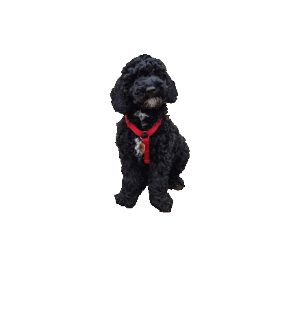
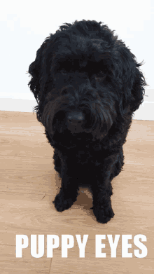
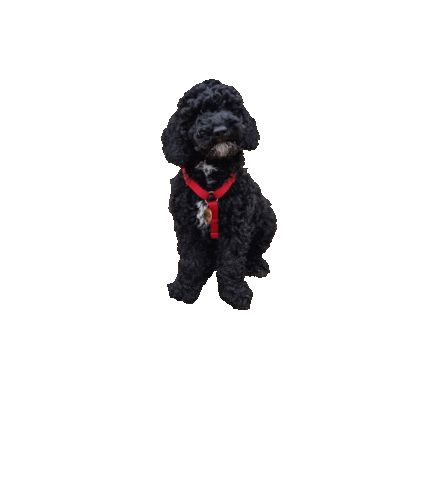
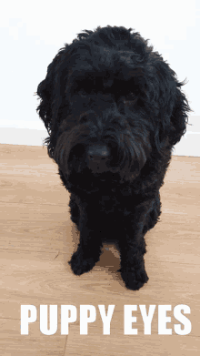
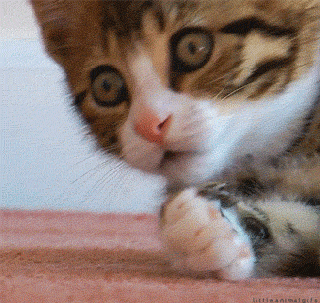
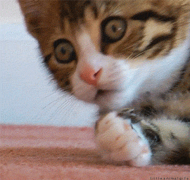

Pets
Bacon Q Dog
 




Bacon Q. Dog is a 9yr old labradoodle. He prefers to spend his days lounging among the three different beds/couches that his family has gifted him. He enjoys a walk or two around the neighborhood, as long as he can pretend that he doesn't see any of the other animals to avoid the embarrassment of not wanting to admit he has no wolf-like skills in chasing them.
At night just as the rest of the family is ready to relax, Bacon suddenly wants to release all of his energy. He will place his toys on a mini couch and frantically drag the couch around, giving his toys "a ride." There is also a lot of rolling. Lots and lots of rolling.
Photo Gallery


Likes
- Belly rubs
- Playing tug-of-war
- Sneaking onto the couch
Meet Berry!
 


Berry, a lively 2-year-old cat, is playful and adores interacting with her toys. With a friendly disposition, she enjoys cuddling and is always keen to explore her surroundings. Her intelligence shines through as she happily learns new tricks. This sweet and loving cat thrives on human companionship, making her a delightful presence in any home.
Pepper - The last one in the Fam


In the quiet hues of a November 2023, a little ball of golden fur entered my life and forever changed the landscape of my days. Pepper, born during a time that holds a special place in my heart, brought with them not just the exuberance of puppyhood but an abundance of love that defines our unique bond.